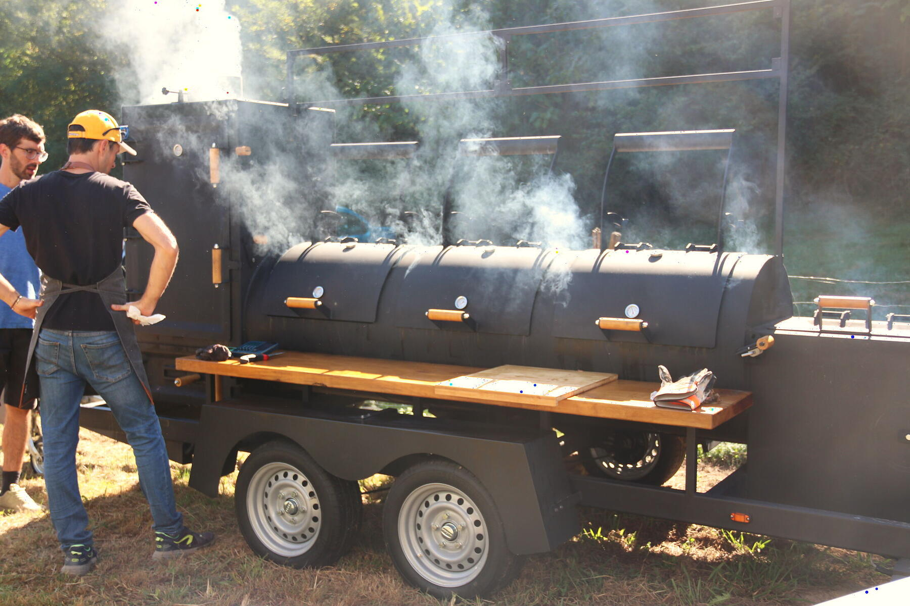
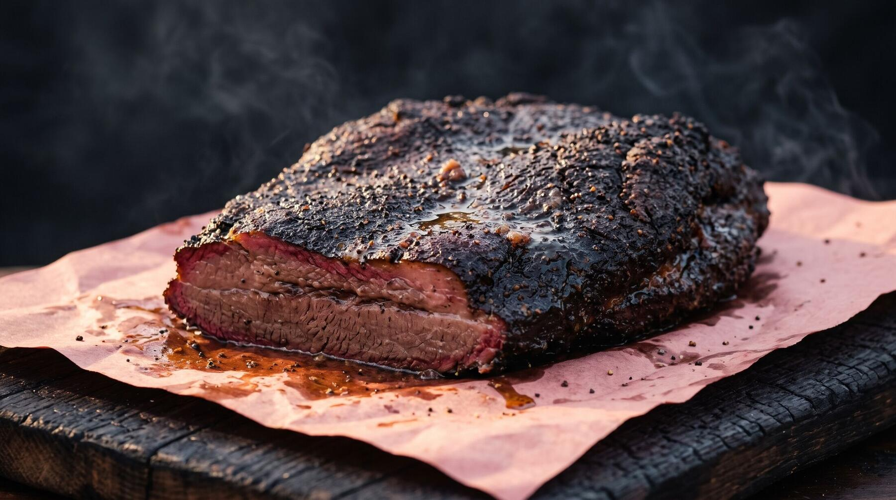
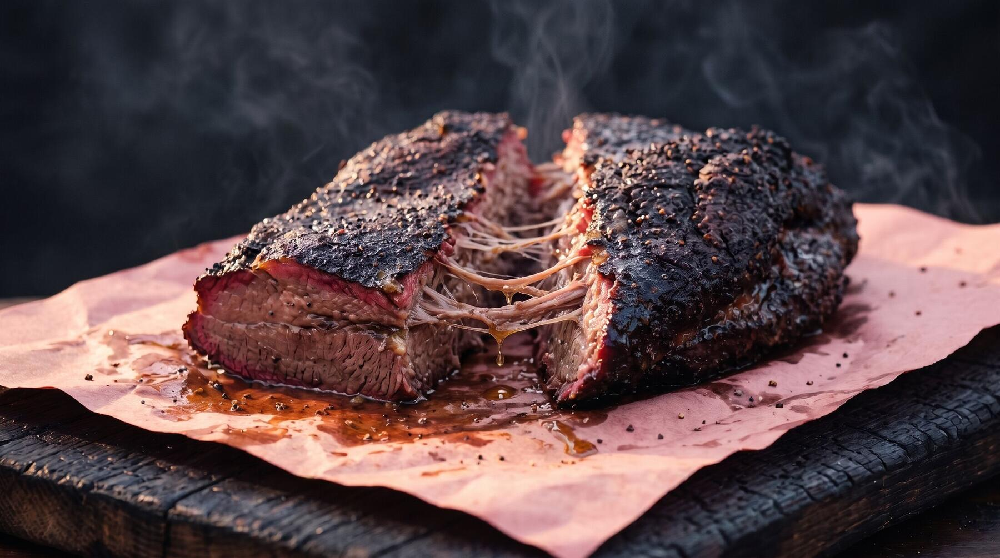
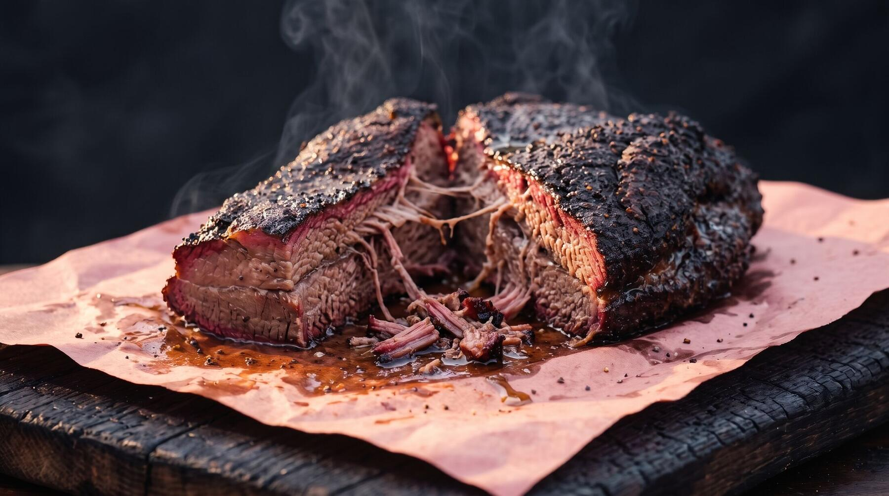
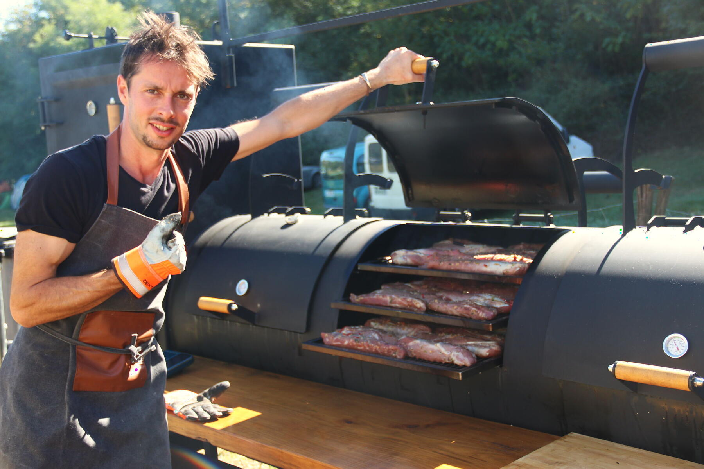
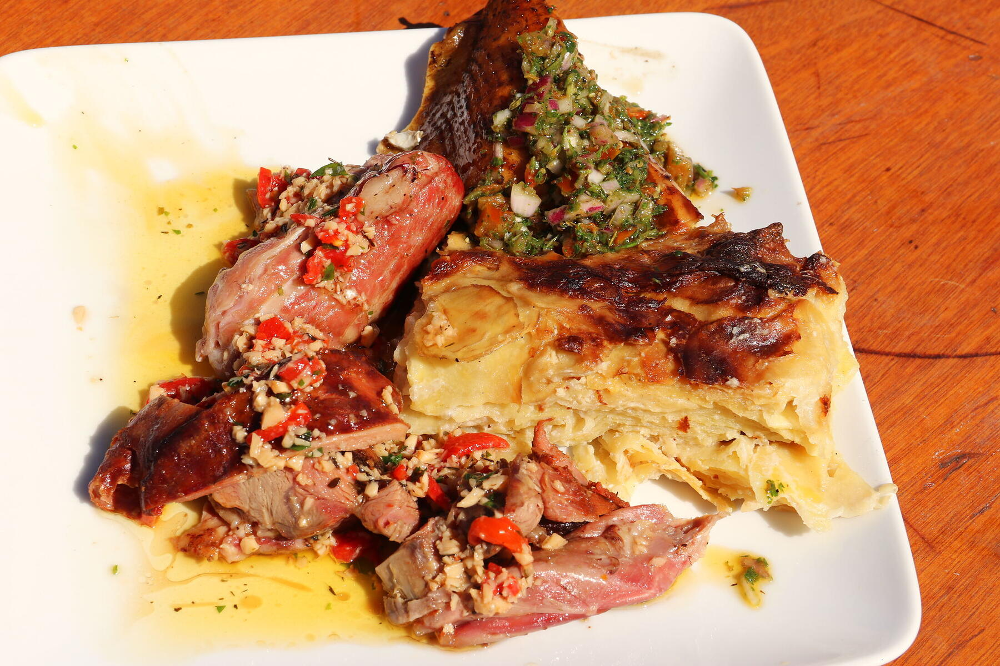

Barbecue texan cuit au bois, sur place, dans une machine construite sur mesure. Un ancien chef privé aux commandes.
par événement
Mika Bon
La machine
Une remorque, un fumoir, un fourneau, un foyer. Tout est soudé sur le même châssis, tout cuit en même temps. Mika arrive avec sa cuisine et repart avec. Vous n'avez rien à installer.

- CheminéesElles tirent la fumée à travers toute la cuisson.
- Armoire verticale de fumageÉtagères sur plusieurs niveaux. Poulets entiers, empilés.
- FoyerEn bas. Du bois, rien d'autre.
- Fourneau horizontal, trois portesTrois chambres, trois étages de grilles. Brisket, épaules, porc.
- Plan de travail en boisToute la longueur. On y découpe, on y effiloche, devant vos invités.
- Double essieuElle se tracte jusqu'à votre pré, votre cour ou votre parking.
Capacité : jusqu'à 400 couverts. Construite sur mesure.



Jusqu'à 14 heures de bois, et la viande se détache toute seule.

Le pilote
Michael Bon, dit Mika. Des années comme chef privé avant de construire sa machine.
Il a cuisiné chez des particuliers, à table, pour des gens qui remarquent tout. Il garde la même exigence devant un smoker de plusieurs mètres.
Concrètement : les sauces sont faites maison, les accompagnements aussi. Un gratin dauphinois, une sauce verte aux herbes, un pimenté. La viande arrive dans une vraie assiette.
Les gants orange, c'est pour sortir les grilles brûlantes. Ils finissent la journée noirs de suie.
Ce qui sort de la machine
Photos prises pendant un vrai service. Aucune image de banque.




Pour qui la machine se déplace
Pays basque et tout le Sud-Ouest.
- MariagesLe vin d'honneur sent le feu de bois. Le repas suit, pour toute la famille.
- Séminaires et fêtes d'entrepriseUne animation et un repas sur la même remorque. Facture claire.
- FestivalsUn service qui tient la cadence, une fumée qu'on voit de loin.
- Fêtes de villageDes longues tablées, un seul cuisinier pour tout le monde.
- AnniversairesDe quelques dizaines à quelques centaines d'invités.
- AssociationsRepas de club, kermesse, soirée de soutien.
Le jour J, dans l'ordre
- 01
Vous remplissez le bordereau
Date, lieu, nombre d'invités, type d'événement. Réponse sous 48 h.
- 02
On cale le menu
Viandes, accompagnements, sauces, plats sans viande. Vous recevez un devis précis.
- 03
La machine arrive
Il lui faut une place plane et un accès pour la voiture qui la tracte. C'est tout.
- 04
Le feu tourne
Cuisson lente au bois, sur place, pendant des heures. Vos invités voient la fumée.
- 05
Découpe et service
Devant les invités, au buffet ou à table. Mika remballe et repart.
Questions de logistique
Quelle place faut-il pour la remorque ?
Un emplacement plat, en herbe ou en dur, accessible à une voiture qui tracte une remorque double essieu. Prévoyez un peu d'espace autour pour travailler et pour que la fumée parte. On regarde ensemble sur plan ou en photo avant de valider.
Faut-il de l'eau et de l'électricité ?
La cuisson se fait au bois, pas à l'électricité. Un point d'eau à proximité aide pour le service. Si vous n'en avez pas, dites-le dans le formulaire : on s'organise.
Et s'il pleut ?
La machine est en acier et fermée : elle cuit sous la pluie. Il faut juste un abri pour le service et pour vos invités, une tente suffit.
La fumée va-t-elle gêner les invités ?
On place la remorque en tenant compte du vent, à distance des tables. La fumée fait partie du spectacle, pas besoin de la respirer pendant le repas.
Avez-vous des plats végétariens ? Et les allergies ?
Oui. Mika est cuisinier avant d'être barbecue : accompagnements, légumes au feu de bois, plats sans viande. Signalez les allergies dans le formulaire, elles sont prises en compte dans le menu.
Combien ça coûte ?
Ça dépend du nombre d'invités, du menu et du service souhaité. Chaque événement est sur devis, avec une réponse sous 48 h. Vous pouvez indiquer un budget dans le formulaire.
Jusqu'à combien de personnes ?
Jusqu'à 400 couverts par événement. La machine cuit tout en même temps, sur place.